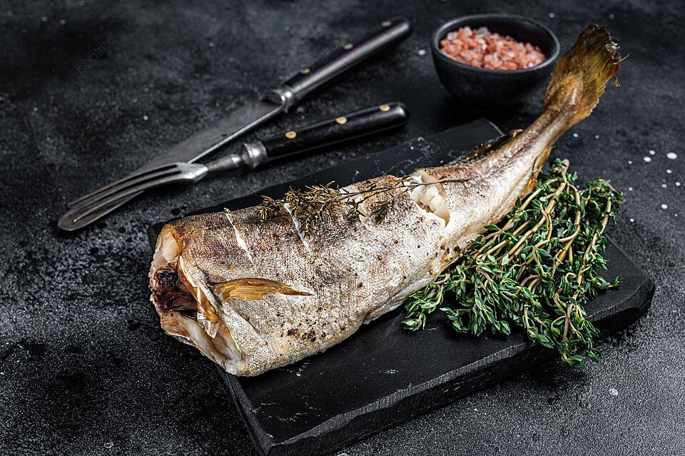

Especialidad pescado asado

Ingredientes
Pescado:
- 4 filetes de pescado blanco (por ejemplo, lenguado, bacalao, o tilapia)
- Sal y pimienta al gusto
Marinada
- 3 cucharadas de aceite de oliva extra virgen
- Jugo de 1 limón
- 2 dientes de ajo picados
- 1 cucharadita de pimentón
- 1 cucharadita de tomillo fresco (o 1/2 cucharadita de tomillo seco)
- 1 cucharadita de perejil fresco picado
- Sal y pimienta al gusto
Guarnición (opcional)
- Rodajas de limón para decorar
- Ramitas de perejil fresco
Elaboración
- En un tazón pequeño, mezcla todos los ingredientes de la marinada hasta obtener una mezcla homogénea.
- Lava y seca los filetes de pescado.
- Sazona ambos lados de los filetes con sal y pimienta al gusto.
- Coloca los filetes en una bandeja para horno y vierte la marinada sobre ellos. Asegúrate de que estén bien cubiertos. Marinar durante al menos 30 minutos en el refrigerador.
- Precalienta el horno a 200°C.
- Coloca los filetes en una bandeja para horno forrada con papel pergamino.
- Hornea durante 12-15 minutos o hasta que el pescado esté cocido y se desmenuce fácilmente con un tenedor.
- Decora con rodajas de limón y ramitas de perejil fresco.